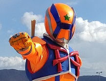
・ インスタグラム
ヒロシマックス
ヒロシマックス
すべての人が一緒に元気で笑顔になれたらいい。

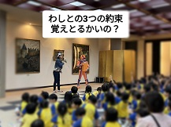
身体を使ったじゃんけんも面白かったよのー。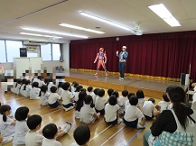
園児のみんなと一緒に遊んだ「グーチョキパーでなにつくろ」では みんなに何を作るかを考えてもらって、いろいろなものを作りました。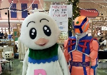
ヒロシマックスとハトッピは、ゆめタウン東広島のフードコート横で開催された、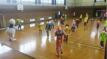
スタンドバイユーの皆さんはとってもパワフル！！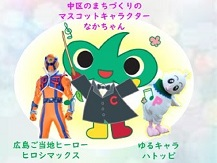
ヒロシマックスもハトッピも、中区のまちづくりのマスコットキャラクター「なかちゃん」に会うのは初めて！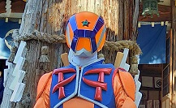
榊山神社の秋季例大祭に行って来たで！。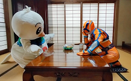
占いの館 千里眼様とコラボさせて頂きました。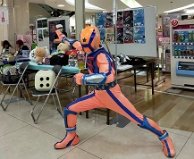
マクラメ編みっちゅうもんがあるんじゃのう。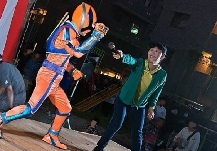
夏祭りは楽しいよのう！会場のみんなと遊べたし、焼き鳥もかき氷もぎょうさん食うて、わしゃあ、ほんまに楽しかったで～。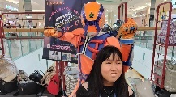
障がいに負けず、必死に生きているみんなを応援しとるで！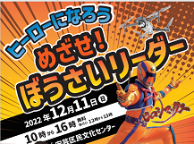
わしはみんなと会えて嬉しかったで！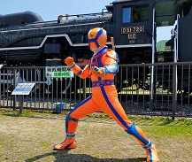
みんな野菜のこと、よう知っとったのう！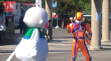
みんなと遊べてぶち嬉しかったで！ありがとの！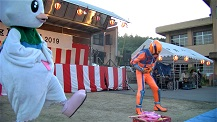
中 野地区夏まつりにまつりに行って来たで！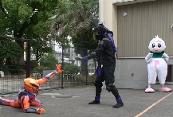
大 芝児童館まつりに行って来たで！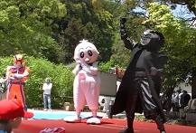
長 善寺さんの「花まつり」に行って来たで！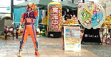
み んな、来てくれてありがとの！楽しかったで！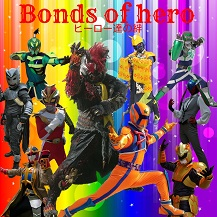
西 日本を応援してくれる各地のヒーローたちと一緒に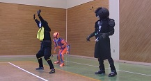
今 年も行って来たで。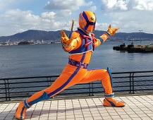
江 田島のカキ祭に行って来たんじゃが、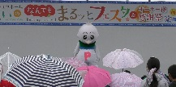
アキュラホームさまの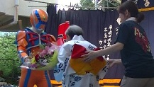
「ゆ たか園夏祭り」色々な感動や楽しさがありました。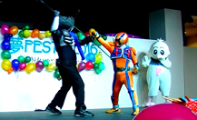
障 害者と健常者が楽しめたこのイベント！！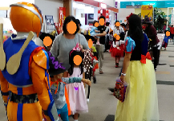
みんなが楽しみにしているハロウィンパレード。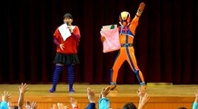
ヒ ロシマックスと司会のゆりえお姉さんで、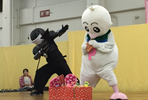
今 回のお話は、はみがきが大嫌いで絶対にしなかったハトッピが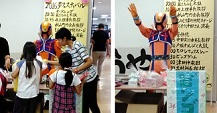
第12 回夢フェスティバルに出演しました。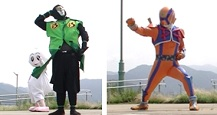
第 77回江田島ポー トプラザ 『みなとオアシスえたじま』に行ってきたで！！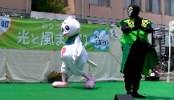
今年も「第 10回 おりづる光と風まつり」に出演しました。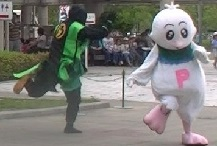
瀬野川公園 「春のわくわくパーク」とっても面白かったです。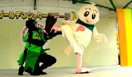
ヒ ロシマック スは、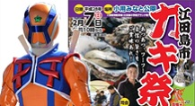
ヒロシマック スが「江田島市カキ祭」に出演しました。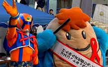
みなさん！！ 「世界エイズデー（１２月１日）」ってご存知ですか？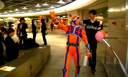
シャレオで開催された「第40回 女性のための体験型イベント」のソフトバンクブースから、ヒロシマックスが登場しました。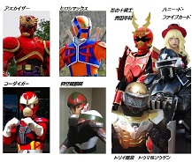
11/22（日） の「広島ジャスティス」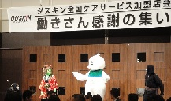
ダスキン「働 きさん感謝の集い」に出演しました。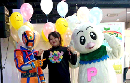
観音マリーナ ホップ (マーメイドスペース)で行なわれた、チャリティイベント「夢フェスタ」～想いをカタチに～に出演しました。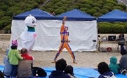
今回のお話 は、作りたてほやほやのまだ、誰も見られたことのないお話でした。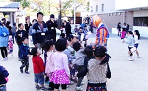
真和保育園の 「しんわのつどい」に行って来ました 。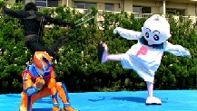
夢トピ ア（もみじ福祉会）の第１１回 夢フェスティバルへ出演しました。 たくさんの皆さんが大きな声でヒロシマックスを応援してくださり、出店や催し物もたくさんあり、とても楽しかったです！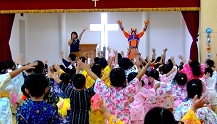
栄光幼稚園の夏祭りに行って来ました。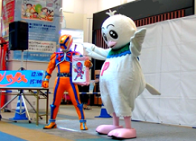
イオン宇品店 に行って来ました。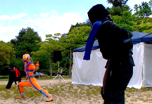
当 日は晴天で暑くて、「見に来てくださっている方々は大丈夫かな？」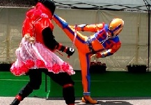
おりづる作業 所のお祭りでも、ヒロシマックスの広島弁が炸裂しておりました。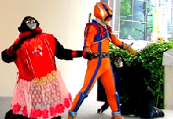
2015フラ ワーフェスティバル「すみれステージ」でヒロシマックスショーを行いました。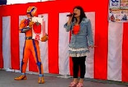
野菜がますま す好きになり、ヒロシマックスと食育についてお約束が出来る、保護者の方にも大人気の「食育クイズ」を行いました。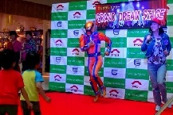
5月2日、 ゴールデンウィーク初日！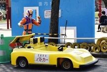
入場料無料で 遊べ、ゴーカートも１人乗り100円、２人乗り150円という安さ。春はピクニックで来ておられる方が、多く見受けられます。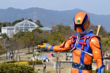
毛利元就時代 の山城を再現した展望台から見る風景は絶景！最初にヒロシマックスの紹介があり、お天気・防災クイズを行いました。
お天気博士からの解説もあり、とても勉強になる時間になりました。
子供のみんなも、大人の方々も、みなさん楽しんで参加して頂けたようで良かったです。
ヒロシマックスのクイズや食育クイズで楽しんだ後、
みんなで踊りました。
あちこちから「楽し～い！」と言う声が聞こえて来て
とっても嬉しかったです。
「広島すぽっとch」の「親善モデル＆親善キッズ」と一緒に写真撮影会をしました。かわいいキッズと素敵なお姉さんたちでした。
きちんと挨拶。そして終わったら、ちゃんと片づけもされていました。
親善モデル＆親善キッズ達をサポートするスタッフの方々も、とても素敵でした。
ヒロシマックスチームは、ピジョンフェスティバルに初めて参加させて頂きましたが、 障がい者の方も健常者の方も、色々な事を一緒に楽しんでいて、心温まるイベントでした。
ピジョンフェスティバルということで、ハトのお祭りだと勘違いしたハトッピも、やってきて楽しんでいました。
ヒロシマックスは、法輪保育園のみんなの「ヒロシマックス～！！」という大きな呼びかけで登場しました。
ヒロシマックスについてのクイズや、野菜さんクイズでもみんな大きな声で答えてくれました。
帰りに保育園の保護者会委員の方が、その様子を写真にとり、缶バッチにしてくださいました。
今回登場した新キャラは、女戦闘忍者の「どろどろピンク」！！
「どろどろピンク」は、暗黒破壊軍団オダークの忍者なのにちょっとお茶目な女の子。
今回は、そんな「どろどろピンク」と、広島弁を話す小さいおじさんの「ヒロシマックス」のお話でした。
結婚式が盛り上がりを見せたころ、なんと！暗黒破壊軍団オダークの戦闘忍者部隊どろどろ忍者が、花嫁をさらいに来たのです。
そこに待ったを入れたのがヒロシマックス。
でもこの後、ヒロシマックスがピンチに陥ります。
そしてヒロシマックスのピンチを救ったのは！？
広島・岩国・和木 土砂災害復興支援チャリティーイベ ント、 『ファイト』を行いました。
土砂災害の被害にあわれた方々が、少しずつでも笑顔になれるよう、心より願っています。
広島駅からマツダスタジアムにかけての線路沿いの道 （通称カープロード）にある、真っ赤なローソンの広島東荒神町店に行って来ました。
ヒロシマックスショーでは、ヒロシマックスの友達のハトッピも大活躍。
ショーの後は、ポンタくんも出演。ローソンクイズで一緒に楽しみました。
マリーナが一望できるプロムナードデッキがライトアップ。
この度の豪雨災害でお亡くなりになられた方々の鎮魂を祈りました。
ヒロシマックスが募金箱を持っているのを見て、広島で何が起きたのか、誰のための募金なのかをお子様にやさしく教える、保護者の方々の姿も ありました。
RCCテレビの「ミラクルマジカル宣伝部」に出演させて頂きました。
「広島の人をより多く笑顔にするため、知名度向上に協力してほしい！」と依頼をしたところ、さっそく宣伝部一行が来て下さいました。
広島市森林公園に集まっていた親子が参加していたスイカ割り大会へ乱入したり、初めてのモトクロスバイクに乗ったりしながら、色々な方々と お会いする事が出来ました。
東海テレビ 真夏のこども祭り「夢と勇気の冒険ドーム2014」に出演して来ました。
ローカルヒーローも、ゆるきゃらも たくさんいて、本当にすごいイベントでした。
広島県外での初めてのショーだったのですが、とても楽しくショーをさせて頂きました。広島弁で背の低いおじさんのヒロシマックスは、愛知の 方から見ると、どうだったのかな？
このイベント中、子供達だけでなく大人の方も含め、たくさんの方々が話しかけてくださいました。
屋上駐車場で行なわれた「ヒロシマックスショー」も、
途中、小雨が降ってきたのですが、みなさん、気にもせず見てくださって、嬉しかったです。
そして何より嬉しかったのが、 歓声の多さ。
あちこちから「おお～！！」という声や、笑い声が聞こえて来ました。
本川保育園のみんなも元気いっぱい。
大きな声で、ヒロシマックスを呼んでくれました。
ヒロシマックスと一緒に「野菜さんクイズ」をしたり、踊ったり
みんなで盆踊りを踊ったり楽しいひとときを過ごしました。
栄光こども園のみんなと、ビーチボールを使ったスイカ割りをしました。
目を隠してくるりと周って、さあ、たたきます。
１回目にたたけなかった子も、２回目はたたけました。
まわりのお友達から拍手が起こりました。
最後に全員で盆踊りをしました。
みんなで輪になって行う盆踊りは、格別なものがありました。
スパークのニューキャラクター、「すぱっくん」が初登場！！
ヒロシマックスとコラボしました。
「すぱっくん」の名前には、とっても大きな口で、何でも好き嫌いせずパクパク食べるという意味があるそうです。
野菜カードを使った、「野菜さんクイズ」や空クジ無しのじゃんけん大会もあり、会場は、大いに盛り上がりました。
天候も良く、とても気持ち良くショーをさせて頂きました。
ちびっこ達も沢山来てくれて、ショーを盛り上げてくれました。
作業所の方が作成されたオブジェやクッキー、パウンドケーキなどが販売されていました。
ひろしまフラワーフェスティバルのパレードの『折りづるみこし連』に出演して来ました。
我らが『ヒロシマックス』と、普段は敵である『どろどろ忍者』、暗黒破壊軍団オダーク幹部の『汚せんちゃん』、汚せんちゃんが生み出した怪 人『ダストン』、そしておなじみの『ハトッピ』や、その友達のうさぎとパンダも参加しました。
ベビーカーで参加のお友達や、車いすで参加のお友達、ハトッピと一緒に歩いてくれたお友達もいました。
ちどり幼稚園の年長組のみんなの「お別れ会」に行って来ました。
「胸の赤いマークはなあに？」「背中には何があったかな？」などのヒロシマックスに関するクイズや、野菜さんを題材にした食育クイズをしま
した。
野菜さんを題材にした食育クイズでは、３つのお約束をしました。
みんな大きな声で約束をしてくれました。
「額の星はなあに？」などのヒロシマックスに関するクイズや
食育クイズ、身体をつかった体操やダンスなどを行いました。
食育クイズでは、３つのお約束をしました。
① 食べる前に手を洗おう。
② 嫌いなものが出てきたら、ちょっとだけでもいいから食べてみよう。
③ 食べた後は歯磨きをしよう。
みんな大きな声で約束をしてくれました。
{kind=link}
{kind=link}
{kind=link}
{kind=link}
{kind=link}
{kind=link}